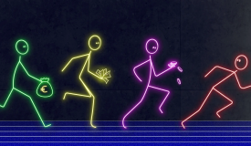
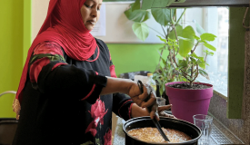
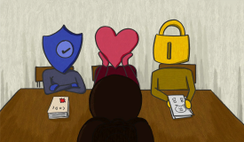
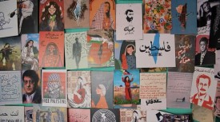
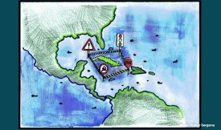
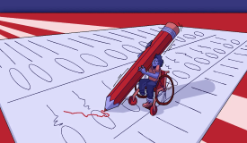
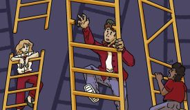

Een metalen ode aan de Utrechtse gastarbeiders
Kunstenaar Aimée Zito Lema ontwierp een kunstwerk als eerbetoon aan de gastarbeiders uit de jaren ‘60 en ‘70. Ze deed dit in samenwerking met de nakomelingen, die willen dat het werk van hun voorouders niet ongezien blijft. 'Wij willen ze niet vergeten en de generaties na ons moeten ze ook niet vergeten.'
Binnenland
- Demonstraties tegen het verdwijnen van taal- en cultuurstudies: ‘Mijn hart brak toen ik het hoorde’
-  Sportfaciliteiten voor studenten zijn essentieel, maar de toekomst is onzeker.
- Rocky Horror: decennia later nog steeds een cultklassieker voor de queer community
-  Zorgen om het einde van de bed-bad-broodregeling: ‘Het gaat niet voor meer terugkeer zorgen’
-  Sociale (on)veiligheid bij studieverenigingen: van hartenluchters tot gedragscodes
Buitenland
- Het museum van Samir bewaart de ziel van een verdreven volk
-  Jordanië: het vreemde eendje in een zee van onrust
-  Een genocide in slow motion: de verwoestende gevolgen van ruim zestig jaar embargo tegen Cuba
- Losse dassen bij Republikeinen in New York en verstikking in Chicago na verkiezingen
- Strenge identiteitsplicht bij de Amerikaanse verkiezingen barrière voor kiezers
- Opgesloten en buitengesloten: hoe Amerikaanse (ex-)gevangenen het stemrecht wordt ontnomen
-  De drempels van het Amerikaanse stemrecht voor mensen met een beperking
Columns
- ‘De brilkeuze van Mark Rutte is een perfect symbool voor zijn regeerperiode’
- Een genocide in slow motion: de verwoestende gevolgen van ruim zestig jaar embargo tegen Cuba
- Losse dassen bij Republikeinen in New York en verstikking in Chicago na verkiezingen
- Strenge identiteitsplicht bij de Amerikaanse verkiezingen barrière voor kiezers
- Opgesloten en buitengesloten: hoe Amerikaanse (ex-)gevangenen het stemrecht wordt ontnomen
- De drempels van het Amerikaanse stemrecht voor mensen met een beperking
Economie
-  De onzichtbare littekens van jeugdwerkloosheid: waarom jongeren stranden in de bijstand
- Een genocide in slow motion: de verwoestende gevolgen van ruim zestig jaar embargo tegen Cuba
- Losse dassen bij Republikeinen in New York en verstikking in Chicago na verkiezingen
- Strenge identiteitsplicht bij de Amerikaanse verkiezingen barrière voor kiezers
- Opgesloten en buitengesloten: hoe Amerikaanse (ex-)gevangenen het stemrecht wordt ontnomen
- De drempels van het Amerikaanse stemrecht voor mensen met een beperking